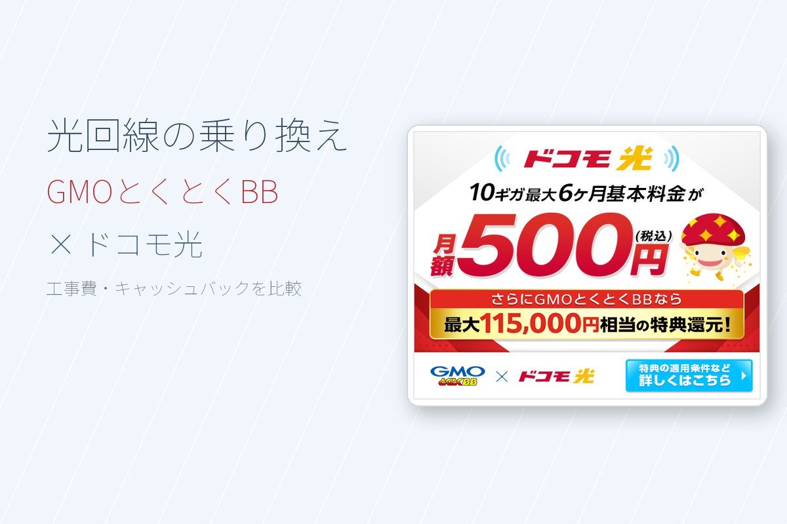

光回線 乗り換え 比較 2026｜ドコモ光・SoftBank光・フレッツ光

主要サービスの比較表
各広告主が公開している情報をもとに、申し込み前に確認したいポイントを整理しました。キャッシュバック金額はキャンペーンや時期で変わるため、必ず公式サイトで最新の条件を確認してください。
| サービス | 主な特徴 | 特典の例（広告主公表） | 向いている人 |
|---|---|---|---|
| ドコモ光（GMOとくとくBB） | ドコモでんき・dカードとのセット可 | 新規利用開始で9,000〜17,000円相当 | ドコモユーザー・セット割を使いたい |
| GMO光アクセス | 転用・事業者変更・新規すべて対象 | 各6,000円相当 | 工事なしで乗り換えたい |
| SoftBank光（NEXT） | キャッシュバックの受け取りやすさを訴求 | 新規10,000円／転用7,500円相当 | ソフトバンクスマホとのまとめ利用 |
| GMOとくとくBB ソフトバンク光 | 新規開通＋利用で成果対象 | 12,000円相当 | ソフトバンク光を検討中 |
| フレッツ光 | 全国の光回線基盤。光コラボの元となる回線 | 最大7万円相当のCBを公表（窓口による） | エリア・回線の安定性を重視 |
※ 金額はユーザーへ支払われるキャッシュバックではなく、A8.net経由の成果報酬の例です。ユーザー側の特典とは異なります。
ドコモ光の条件を確認する →※ リンク先は広告主の公式サイトです（アフィリエイトリンク）
サービスを選ぶ前に確認すること
1. 転用・事業者変更が使えるか
既に光回線を引いている場合、工事なしで事業者だけ変えられる「転用」「事業者変更」が使えるかどうかが最初の分かれ目です。GMO光アクセスは転用・事業者変更・新規開通のいずれも対象です。
2. キャッシュバックの受取時期
「最大◯万円」と書かれていても、受け取りまでに手続きが必要で、期限を過ぎると無効になるケースがあります。受取時期と申請方法を契約前に確認しましょう。
3. 契約期間と違約金
更新月を外して解約すると違約金が発生する場合があります。現在の回線の更新月を調べてから、新しい回線の開通日を調整するのが安心です。
比較でよくある失敗
| 失敗例 | 対策 |
|---|---|
| 月額だけ見て特典条件を読まなかった | 工事費・受取時期・契約期間も比べる |
| 開通前に旧回線を解約した | 開通確認後に解約する |
| 提供エリア外だった | 住所から事前確認する |
| 特典の申請を忘れた | 受取期限をカレンダーに記録する |
※ リンク先は広告主の公式サイトです（アフィリエイトリンク）
各サービスの詳細
ドコモ光
ドコモのスマートフォンを利用している場合、セット割が魅力です。GMOとくとくBB経由なら、ドコモ光単体・でんきセット・dカードセット・3点セットで成果条件が異なります。
GMO光アクセス
転用・事業者変更・新規開通がすべて対象。工事を伴わずに乗り換えたい人には選択肢に入りやすいサービスです。
SoftBank光
ソフトバンクスマホとのまとめ利用を想定したサービス。代理店によってキャッシュバックの受取やすさを訴求しています。
フレッツ光
全国の光回線基盤そのもの。光コラボレーション各社はこの回線を借りてサービスを提供しています。窓口によって特典内容が異なるため、比較が必要です。
フレッツ光の申込窓口を確認する →※ リンク先は広告主の公式サイトです（アフィリエイトリンク）
よくある質問
- どの光回線がいちばんお得？
- スマートフォンのキャリアや現在の回線の契約状況によって最適解が変わります。月額・工事費・特典・契約期間の4点で比較してください。
- 乗り換えに工事は必要？
- 転用や事業者変更なら工事が不要な場合が多いです。新規開通は工事が必要です。
- キャッシュバックはいつ受け取れる？
- 開通から数か月後に振り込まれるケースが一般的です。申請期限を確認しましょう。
- 解約金はかかる？
- 契約期間と更新月によります。現在の回線の更新月を先に確認してください。
まとめ
光回線は「どこが一番安いか」だけでは決まりません。工事の有無・特典の受取条件・契約期間を確認し、自分の状況に合うサービスを選ぶのが失敗しないコツです。気になるサービスがあれば、公式サイトで最新の条件を確認してみてください。
GMOソフトバンク光の条件を確認する →※ リンク先は広告主の公式サイトです（アフィリエイトリンク）